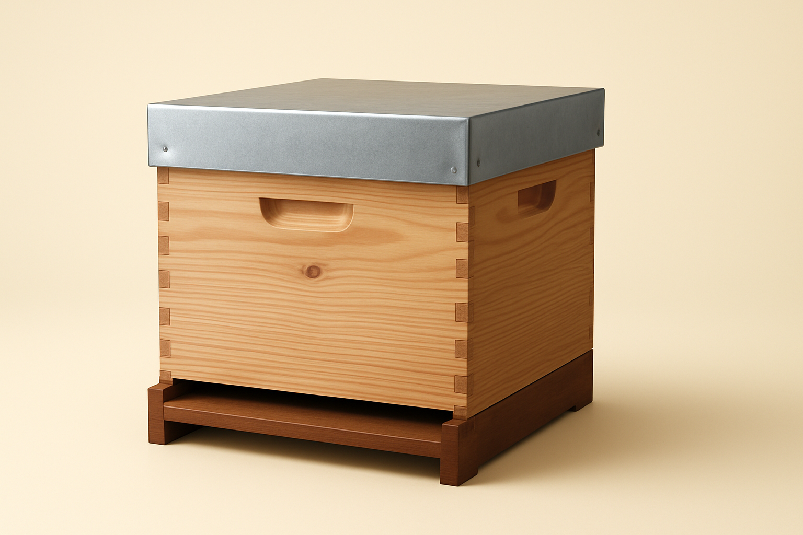
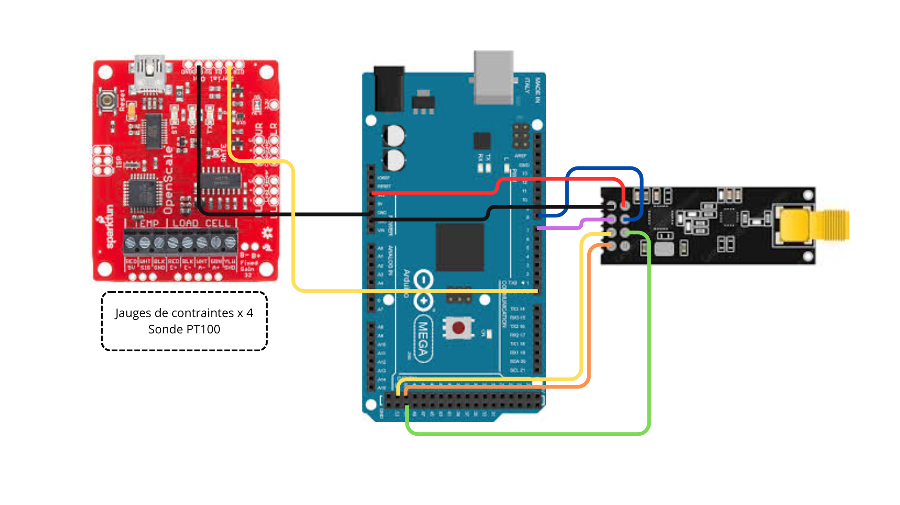
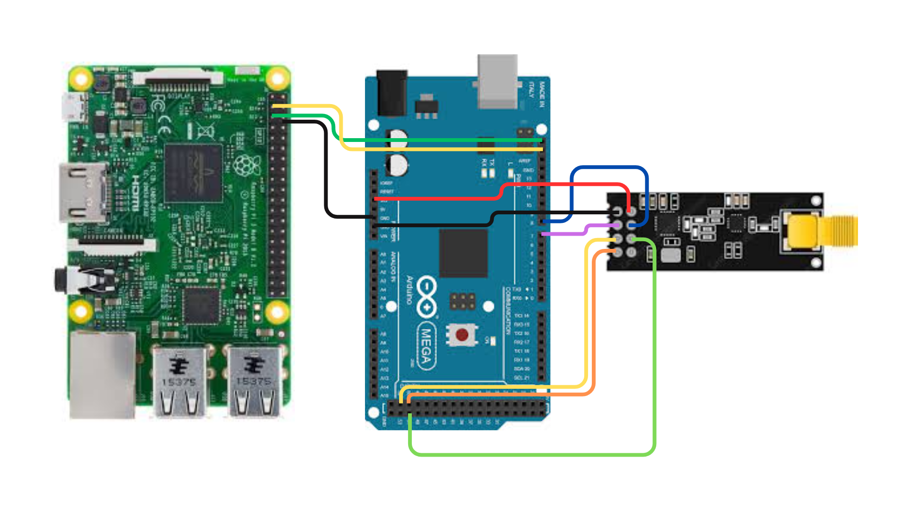

Surveillance à distance des ruches
Mise en situation
Dans le cadre de mon projet de fin d’année en BTS, j’ai collaboré avec une équipe de quatre personnes pour développer un système de surveillance à distance des ruches. Mené de janvier à mai 2025, ce projet m’a permis de participer à la conception et à la mise en œuvre d’une solution technologique innovante pour le suivi en temps réel de l’état des ruches.
Cahier des charges
Le système permet à un apiculteur de suivre l’état de ses ruches en temps réel. Chaque ruche transmet son poids, sa température intérieure et son numéro à une centrale qui collecte également la température et l’humidité extérieure, tout en géolocalisant le rucher. Ces données sont stockées dans une base de données et affichées sur un site web pour un suivi facile et interactif. En cas de risque d’essaimage ou de vol, un mail automatique est envoyé à l’apiculteur. Pour renforcer la sécurité, une caméra de surveillance transmet les images sur une interface web sécurisée.
Partie technique
J’ai été chargé de concevoir et de réaliser la partie du système dédiée à la collecte des mesures des ruches, à la transmission des données et à leur réception par la centrale du rucher. Pour relever ces défis techniques, j’ai utilisé le langage Arduino (C/C++) ainsi que le matériel Arduino Mega 2560.
Shéma électionique de chaque ruche
Sur ce schéma nous pouvons aprçevoir une carte OpenScale à gauche de l'image en rouge. Cette carte permet de relever la valeur des jauges de contrainte associé pour y associer une masse mais aussi relever et transmettre la température.
La carte Arduino Méga 2560, (au centre) permet de récupérer les données de la carte OpenScale en liaison série. Ces données sont traitées afin d'analyser l'état de la ruche pour être envoyés à la centrale du rucher en radio via un module NRF24. Nous pouvons appercevoir ce module à droite de l'image.
Extrait de code de la ruche
String ligne = Serial.readStringUntil('\n');
int virgule1 = ligne.indexOf(',');
int virgule2 = ligne.indexOf(',', virgule1 + 1);
// Extraire la masse et la température de la chaîne
String massestr = ligne.substring(0, virgule1);
String temperatureStr = ligne.substring(virgule2 + 1);
// Convertir les chaînes en nombres
Ruche.masse massestr.toFloat();
Ruche.temperature = temperaturestr.toFloat();
Recontextualisation
Cette intégration de code a été effectuée sur l’Arduino de chaque ruche afin de convertir les trames reçues de la carte OpenScale en valeurs exploitables, que l’on peut ensuite stocker dans des variables. En effet, la carte OpenScale transmet les mesures via une liaison série. Pour pouvoir traiter ces données, il est donc nécessaire de connecter un Arduino. Ce code sert ainsi de pont entre les deux cartes.
Schéma électronique de la centrale du rucher
Sur ce shéma nous pouvons retrouver notre module radio NRF24 qui se charge de recevoir les données des différentes ruches. Le module transmet ensuite les données reçus en SPI à l'Arduino méga qui se charge d'extraire les données pour les envoyer en I2C à un raspberry pi. Le raspaberry pi a pour mission de colleter toutes les données du rucher pour les envoyés à une base de donnée. Un site web y est associer pour visualiser les données de l'activité.
Extrait de code du rucher
void SendPipe() {
String SendNumRuche = String(Ruche.NumeroRuche);
String SendMasse = String(Ruche.masse, 2);
String SendTemperature - String(Ruche.temperature, 2);
String SendEtat - String(Ruche.etat);
String SendTemperatureExt = String(sht.getTemperature());
String SendHumiditeExt - String(sht.getHumidity());
String Trame = (SendNumRuche + “,” + SendMasse + “,” + SendTemperature + SendEtat + “,” + Send TemperatureExt + “,” + SendHumiditeExt + "\0");
Trame.toCharArray(value, 32);
Wire.write(value);
delay(1000);
}
Recontextualisation
Cette fonction permet de regrouper les données reçues des ruches, qui sont stockées dans une structure, puis de les convertir en chaîne de caractères. Ensuite, la trame est préparée et envoyée via I²C au Raspberry Pi, avec un délai d’une seconde entre chaque envoi.